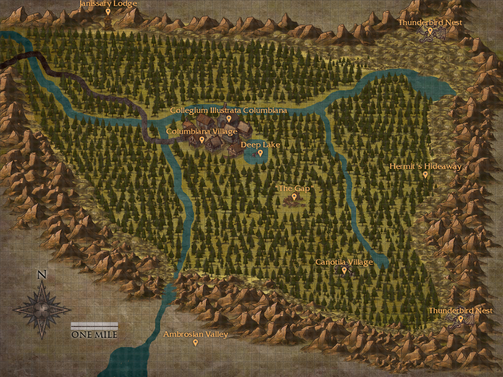

Playable Races
The Valley(s)
Columbiana Valley
Nestled in the Rocky Mountains a relatively short drive from Denver in a protected national park, Columbiana Valley is the functional capitol of Mage culture in North America. While Enclaves exist in most every major city, they are tiny and secretive in contrast to Columbiana Village and its neighboring University. While not all mortals who live here are aware of the supernatural beings among them, most are at least aware of just how bizarre their hometown is and know better than to wander into the woods without protection or at night. The valley itself contains both stable populations of local mystical wildlife, such as the Thunderbird or the Uktena sanctuaries, and invasive species from other parts of the world, such as the Unicorn and Wyverns which roam wild in the woods and mountains of the valley.

Ambrosiana Valley
Not so long ago, Columbiana was only one half of the "Twin Valleys," a pair of closely neighboring valleys under mutual protection from the mundane world and their twin villages were called the Twin Capitols of North America. Where Columbiana was academic and intentionally more mundane, Ambrosiana Village was both more Cosmopolitan and more openly mystical. Unfortunately, a great disaster struck the sister city roughly thirty years ago and utterly destroyed the Ambrosiana Valley Domain. Where the city once stood is now a barren ruin and all its survivors long since relocated. Most of the wildlife sanctuaries are now infested with strange shadowy and corrupted versions of what once lived there or a strange invasive shadow demon creature. As sunlight only barely penetrates the thick, black clouds which hover over the city it is highly advised for any and all persons avoid entering Ambrosiana Valley whenever possible and to never visit the fallen valley at night.
Beyond the Valley
- Other Domains
- Avalon:An archipelego off the coast of Europe and the British Isles (roughly south of Ireland, west of France, and southwest of Great Britain). This is the place of medieval legends brought to life and the mystic traditions of Western Europe. Knights still roam the lands here and great castles with the varied descendents of the Mage Kings of Avalon's past loom large over much of the islands. On the largest island lies the Lyonesse Academy, the oldest continuously attended mystic academy in Europe. On another island lies the body of a sleeping king. On yet another, the Fair Folk hold court that seems practically as alien as the Gentry to the Wyrdlings of the rest of the world.
- CAD: AKA, Central Australian Domain. Originally a colony established by the European elements High Council in the 1800s, the CAD was intended to tap into the immense amount of mystic energy which funneled through nearby Uluru. Fortunately, those who were sent there were receptive to protests from the locals and the settlement was moved to the West. They still research the mystic leylines of the area from here, but with the increasing presence of aboriginal mystics among its staff they seek to understand but not disrupt. The Domain itself is entirely self-contained and each section is connected by enchanted tunnels.
- CES:AKA, Computational Engineering Solutions. A front business for CES, which also serves as the newest Domain in the Council's purview. The building itself is geographically small, but due to spatial manipulation magics, the interior size is many orders of magnitude larger than its exterior space would imply. Though it is not strictly accurate, a rough approximation of scale is 5m:1m, or in other words, each floor is roughly 17000 square feet, versus 3500 which its exterior appears to be.
- Diyu:Entirely underground, the Diyu Springs (sometimes translated as the Yellow Springs) is a Domain which is of disputed origin. Some claim that the underground realm is a literal shard of the Chinese Underworld (i.e. "Hell") which was broken free from Naraka (the lands of the dead) and anchored to Earth by ancient gods and/or mystics. The competing, and currently Council approved, theory is that an ancient group of mystics created the Springs while borrowing inspiration from tales of the underworld for its internal aesthetic.
- Great Irem:Lost deep in the deserts of the Empty Quarter, this one center of religious mysticism is hidden from detection by the sands themselves. Satellites and planes are thwarted by sandstorms, dunes lead wanderers astray and in a pinch the entire city will sink beneath the sediment. In its exact center is the great City of Pillars where the largest archives of the High Council are guarded by warrior-scholars.
- Great Zimbabwe:Claiming descent from the nation of the same name, Great Zimbabwe is a small kingdom allied with the High Council which hides itself by being mystically cloaked from non-mystic eyes and slightly "out-of-phase" with reality. The nearby memorial is actually a collection of mystically copied relics to satiate history minded mortals...
- Hyperborea:Hidden beneath the Severny Ice sheet, lies the largest of the Council's Domains. The Domain is mostly left wild or otherwise rural, but the settlements are among some of the most open and ancient of all mage communities, outpaced only by the eldritch edifices of Leng.
- Madrasah Timbuk:Including entrances within each of the three known mortal universities (Djonguereber, Sidi Yahiya, and Sankore) and incorporating the fourth "hidden" university at Haidara. The Domain is entirely underground and the Madrasah Haidara no longer has a physical, above ground location. Despite this, they've built new connections to modern sites of learning and faith.
- Mount Olympus:Hovering hundreds of feet above the peak of the mountain which bears its name, Olympus claims to be in the exact location of the original peak's highest point when the gods ruled from on high. The mystics leave it vague on whether the gods were ever real, but regardless of its origin, the "city in the clouds" is clearly ancient and of elaborately mystic construction and was already that way when mages claimed its territory after centuries of abandonment in the 1400s.
- New Machu Picchu:Macchu Picchu remains a thriving, if small, city in the traditional Incan style. The mountain beneath the city is partially hollow, and the network of caverns are wholly self-contained habitats and ecosystems designed by the magi to preserve the fading natural state of the mountains and provide refuge for the dwindling Remnant species (such as the Alicanto, the Monai, and the camahueto) native to the region.
- Valley of Shambhala:Wedged into a forgotten valley in the Himalayan mountain range, with enchantments which prevent non-mystics from detecting or even seeing the valley and even if they happen by chance to get close enough, they see only an empty valley and not the aesthetic splendor of its temples and villages.
- Plateau of Leng (Fallen):The entire Plateau has been "unmappable" and thus undetectable to mortal eyes and instruments for as long as the mystics have been aware of its existence. Large scale mystic settlements are a recent occurrence, having only appeared in the few centuries. The settlements mostly started as research facilities created to study the strange artifacts, language, relics, and creatures left beneath the ice in ancient times. After the Battle of Leng, wherein an Exalted attack resulted in the awakening of an ancient creature beneath the ice, most modern settlements have been destroyed and all inhabitants (barring a singular Gardener) evacuated. Leng now stands empty and abandoned.
- New Atlantis (Exalted Order): AKA, Antillia. An archipelago of islands lifted from the bottom of the Atlantic Ocean during the era of the Roman Empire. During the Schism, followers of Tytus Andronichus followed him to the islands which they claimed to be the ruins of Old Atlantis and founded the Exalted Order upon its ruins and dubbed their new nation Neo Atlantis. Dedicated to Mage Supremacy, they enslave other supernatural creatures and build their power to eventually conquer the mortal world under their "Enlightened Leadership." Currently, they are in a state of rebuilding after the most recent Shadow War with the High Council, but they still pose a threat when they send their agents out for supplies or information, or if a wayward Councillor wanders too close to Neo Atlantis territory.
Das Whirled Map
Or Click Here